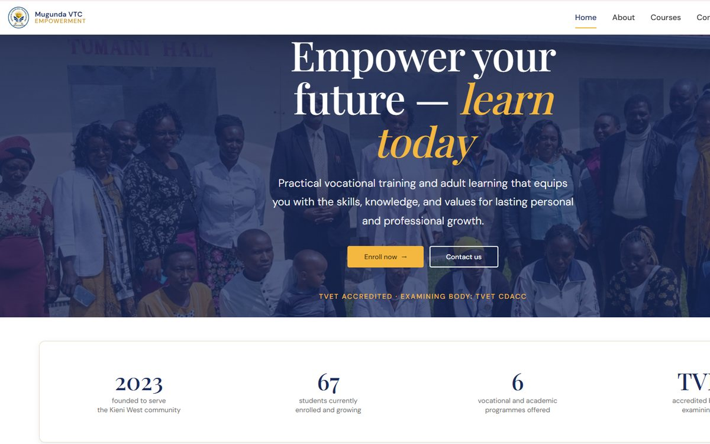

Case study 05 · Client website
Mugunda VTC
The public website for Mugunda Vocational Training Centre, a TVET-accredited college in Nyeri County — a fast static HTML, CSS and JavaScript site that presents its programmes, takes enquiries and admissions interest, and invites support. Delivered through Webloom Tech Kenya.

01
Overview
Mugunda Vocational Training Centre started in May 2023 as an adult education centre and has grown into a TVET-accredited vocational training institution, examined by TVET CDACC, serving the Kieni West community in Nyeri County.
It offers Food & Beverage Production and Home-based Care at Level 4, Computer Operations at Level 3, and adult education for learners preparing for KCSE. The website is its main public face: where prospective students discover courses, where parents and sponsors learn what the centre does, and where people get in touch.
02
The challenge
- Many visitors arrive on mobile data and mid-range phones, so pages had to load quickly and stay light.
- The audience is broad — school leavers, adult learners, parents, sponsors and partners — and each needs to find their own next step quickly.
- Staff had to be able to receive admissions and contact enquiries without a server or database to maintain.
- A young institution needs to be found by people searching locally for vocational training in Nyeri.
03
My contribution
- Led development of the site from structure to launch, delivered through Webloom Tech Kenya in a series of sprints.
- Built the Home, About, Courses, Admissions, Contact and Support us pages with a consistent, responsive layout.
- Wired the admissions and contact forms to Formspree, so enquiries reach the centre by email with no back end to run.
- Added the finishing layer: a full favicon set, a custom 404 page, and typography paired with Playfair Display for headings.
- Set up on-page and local SEO — titles, descriptions, canonical tags, Open Graph cards and location metadata — and Google Search Console verification.
Herman Gathege collaborated on the build in the same Git repository.
04
Approach
- Static by design: plain HTML, CSS and JavaScript with no framework or build step, so pages are fast, cheap to host and easy to maintain.
- Clear routes for each visitor: “Enroll now”, “Contact us” and “Support us” calls to action appear where each audience expects them, with the key facts — founding year, enrolment, programmes and accreditation — up front.
- Contact that fits how people reach out: click-to-call and WhatsApp links alongside the email forms.
- Found locally: location metadata for Nyeri County, descriptive page titles and social cards so shared links look right on WhatsApp and Facebook.
05
Technology
06
Where it stands
The site is live at mugunda-vtc.com, with every page and enquiry form in use.
Traffic and enrolment figures belong to the centre, so I have not published them here.
07
Key takeaways
- For a small institution, a static site is a feature: nothing to patch, nothing to crash, and pages that load quickly on any connection.
- Writing for several audiences means giving each one a single obvious next step rather than one long page for everyone.
- Local SEO and good social previews matter as much as design when most people will find the site through search or a shared link.